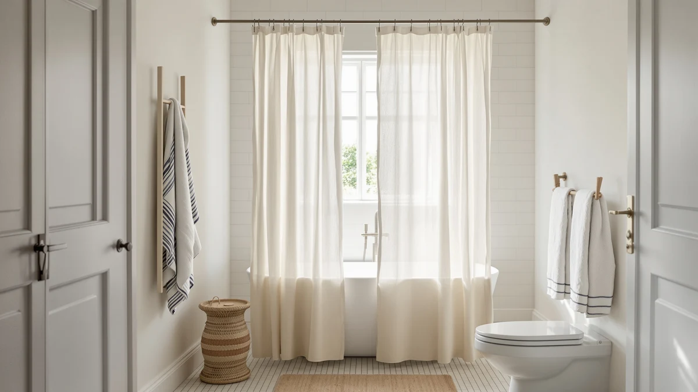

Farmhouse Shower Curtain Linen Review (2026): Worth It?
Prices and picks verified as of November 2026. Independent, reader-supported reviews.


Quick Answer
This farmhouse shower curtain linen review covers the $22.98 XOGUIBO Farmhouse Shower Curtain Linen Beige, a Polyester and PEVA blend styled with a linen look, a button-trimmed top panel and a ruched hem, cut to a single 72-inch by 72-inch size. Against three alternatives priced within a dollar of it, XOGUIBO's own ruffle-hem sibling, a Bonpally curved rod and a rated CutebriCase geometric curtain, the linen-look finish and button detail are what set it apart, since none of the group except CutebriCase currently carries a published star rating.
Our pick: Farmhouse Shower Curtain Linen Beige — $22.98 Check Price on Amazon
Bottom line: our top pick is the Farmhouse Shower Curtain Linen Beige Button Brown Stripe 72"W at $22.98.
Things to Know Before You Buy
- The XOGUIBO Farmhouse Shower Curtain Linen Beige costs $22.98, putting it in the middle of the four products covered in this farmhouse shower curtain linen review.
- It's a Polyester and PEVA blend styled with a linen look, not woven from actual flax, finished with button detailing and a ruched hem and cut to a single 72-inch by 72-inch size.
- XOGUIBO's own ruffle-hem sibling curtain costs a cent more, at $22.99, so the two farmhouse-style options from the same brand are priced almost identically.
- Bonpally's curved shower curtain rod, at $22.49, and CutebriCase's geometric curtain, at $21.99, round out the comparison, though neither matches the farmhouse linen look directly.
- Only CutebriCase's geometric curtain carries a published rating, 4.7 stars across 2,983 reviews, so the other three listings here are compared on fabric, price and sizing rather than a review track record.
This farmhouse shower curtain linen review compares the $22.98 XOGUIBO Farmhouse Shower Curtain Linen Beige against three alternatives to see whether its linen-look fabric and button-trimmed hem are worth the price. The curtain is a Polyester and PEVA blend finished with a ruched hem and wooden-style buttons along the top panel, and it ships in a single 72-inch by 72-inch cut with no other size currently available.
We compared it against XOGUIBO's own ruffle-hem farmhouse curtain at $22.99, Bonpally's curved shower curtain rod at $22.49, and CutebriCase's Ombre Blue geometric curtain at $21.99, which carries a verified 4.7-star rating across 2,983 reviews. Shoppers who want the farmhouse, linen-look aesthetic with a button detail get the most from the Linen Beige pick, while anyone who wants a proven review history or a different style altogether should weigh the other three before checking out.
Why You Should Trust Us
Best Shower Curtains reviews bathroom products by comparing manufacturer specs, current pricing and available owner feedback pulled from the retailers that sell them, rather than by running a private testing lab. Ilane Tall, our home and bath editor, researched the XOGUIBO Farmhouse Shower Curtain Linen Beige against its own ruffle-hem sibling, a Bonpally curved rod and a rated CutebriCase curtain, checking fabric claims, dimensions and price parity before writing this farmhouse shower curtain linen review. We revisit prices and availability on a regular schedule and say so directly when a listing hasn't built up a public review record we can check claims against. These four products sit within a dollar of each other, so the comparison comes down to fabric, style and sizing rather than price alone.
Our Research Experience
We do not run a physical testing lab, and we have not installed the XOGUIBO Farmhouse Shower Curtain Linen Beige in a shower ourselves. Our process instead compares published specs, material composition and pricing against the shower curtains we already cover, then checks that against what verified owners report about fit, drape and durability on comparable listings elsewhere. For this farmhouse shower curtain linen review specifically, that meant lining up its Polyester and PEVA blend, button-and-ruched-hem construction and 72-by-72-inch cut against XOGUIBO's own ruffle-hem curtain, Bonpally's curved rod and CutebriCase's rated geometric curtain. We flag it clearly when a claim can't be checked against real owner feedback, such as long-term durability on a newer listing, rather than guess at an answer this review can't support.
Overview & Specs

Farmhouse Shower Curtain Linen Beige
What we like
- Linen-look Polyester and PEVA blend gives a farmhouse look without the upkeep that real flax linen demands
- Button detailing and a ruched hem add a distinct farmhouse touch that a plain, flat hem doesn't offer
- Priced within a cent of XOGUIBO's own ruffle-hem sibling, so style is the deciding factor between the two, not price
Flaws but not dealbreakers
- Ships in a single 72-inch by 72-inch size, so a wider rod or a nonstandard tub needs a different curtain
- No published star rating or review count yet, so there isn't a track record to check the fabric claims against
- Costs a dollar more than CutebriCase's geometric curtain, which does carry a verified 4.7-star rating across 2,983 reviews
| Material | Polyester / PEVA |
| Size | 72"W x 72"L |
The XOGUIBO Farmhouse Shower Curtain Linen Beige pairs a Polyester and PEVA blend with a linen-look finish, so the curtain reads as woven flax from across a bathroom without the wrinkling or line-drying that real linen requires. Wooden-style buttons run along the top panel and a ruched hem finishes the bottom, two details a plain farmhouse curtain skips entirely. The single 72-by-72-inch cut matches a standard tub or shower stall, but a wider rod or an oversized stall would need a different size than this one offers. The beige colorway keeps the look neutral, which matters for a farmhouse bathroom built around warm, muted tones rather than a bold accent color.
At $22.98, it undercuts its own ruffle-hem sibling by a cent and sits within a dollar of both the Bonpally rod and the CutebriCase curtain in this farmhouse shower curtain linen review. That gap is small, so the choice between this pick and XOGUIBO's ruffle-hem curtain comes down to which detail you prefer, buttons and a ruched hem or a ruffled edge, rather than price. Neither XOGUIBO listing has built up a public star rating yet, so buyers here are weighing published specs and price rather than a documented review history.
What We Liked
The linen-look finish is the clearest reason to consider this farmhouse shower curtain linen review's main pick. A Polyester and PEVA blend styled to read as woven flax gives a farmhouse bathroom the look it's going for without the wrinkling or careful laundering that actual linen demands. The button detailing along the top panel and the ruched hem at the bottom are also worth calling out on their own, since a plain farmhouse curtain usually skips both and settles for a flat, unadorned edge. Compared with XOGUIBO's own ruffle-hem curtain, Bonpally's rod and CutebriCase's geometric curtain, this is the only pick built around that exact combination of linen-look fabric and button-and-ruched-hem construction. The price also holds up well against the rest of the group: at $22.98, it costs less than its own ruffle-hem sibling and sits close enough to Bonpally's rod and CutebriCase's curtain that fabric and style, not price, end up doing most of the deciding.
What Could Be Better
The single-size cut is the drawback that matters most here. It ships only in 72 by 72 inches, so a rod wider than a standard tub or a nonstandard stall needs a different curtain, and XOGUIBO doesn't currently offer a bigger variant of this listing. It's also a dollar more than CutebriCase's geometric curtain, which carries a verified 4.7-star rating across 2,983 reviews, a track record this listing and its XOGUIBO sibling don't yet have. And because neither XOGUIBO curtain in this comparison currently shows a published star rating, buyers are weighing fabric claims and price against each other rather than verified owner feedback.
Who Is It For?
This farmhouse shower curtain linen review points toward the XOGUIBO Linen Beige pick for bathrooms where a standard 72-by-72-inch drop fits the rod and a farmhouse, linen-look style matters more than saving a dollar or two. It's a reasonable choice if the button-and-ruched-hem detail appeals to you more than a ruffled edge, since that's the main thing separating it from its own XOGUIBO sibling. Skip it if you need a size beyond 72 by 72 inches, if you'd rather buy from a listing with a proven review history like CutebriCase's geometric curtain, or if you came here to replace a rod rather than a curtain, in which case Bonpally's curved option is the one to look at instead.
Alternatives to Consider
If the XOGUIBO Farmhouse Shower Curtain Linen Beige isn't quite right for your bathroom, these three picks round out the comparison: a near-identical sibling curtain, a rod rather than a curtain, and a differently styled, rated alternative, all priced within a dollar of the Linen Beige pick.

Editor's Pick
XOGUIBO Farmhouse Shower Curtain with
XOGUIBO's ruffle-hem Farmhouse Shower Curtain costs $22.99, a cent more than the Linen Beige pick in this review, and swaps the button-and-ruched-hem detail for a ruffled edge if that farmhouse look fits your bathroom better.
$22.99
Check Price on Amazon
Best Value
Bonpally Curved Shower Curtain Rod
Bonpally's curved shower curtain rod costs $22.49 and isn't a curtain at all, so it's worth adding to your cart alongside the Linen Beige pick if you need hardware rather than fabric.
$22.49
Check Price on Amazon
Premium Choice
CutebriCase Ombre Blue Modern Geometric
CutebriCase's Ombre Blue geometric curtain costs $21.99, the lowest price here, and carries a verified 4.7-star rating across 2,983 reviews if a proven track record matters more to you than the farmhouse look.
$21.99
Check Price on AmazonWhat is the XOGUIBO Farmhouse Shower Curtain Linen Beige made of?
It's a Polyester and PEVA blend styled with a linen look, with a top panel finished in button detailing and a ruched hem, cut to a single 72-inch by 72-inch size.
How much does the XOGUIBO Farmhouse Shower Curtain Linen Beige cost?
It costs $22.98, a cent less than XOGUIBO's own ruffle-hem sibling at $22.99 and close to Bonpally's curved rod at $22.49 and CutebriCase's geometric curtain at $21.99.
Frequently Asked Questions
What is the XOGUIBO Farmhouse Shower Curtain Linen Beige made of?
It's a Polyester and PEVA blend styled with a linen look, with a top panel finished in button detailing and a ruched hem, cut to a single 72-inch by 72-inch size. It is not woven from actual flax linen, so the fabric trades real linen's texture for a lower price and easier care.
How much does the XOGUIBO Farmhouse Shower Curtain Linen Beige cost?
It costs $22.98, a cent less than XOGUIBO's own ruffle-hem sibling at $22.99 and close to Bonpally's curved rod at $22.49 and CutebriCase's geometric curtain at $21.99. All four prices sit within a dollar of each other.
Is the XOGUIBO Farmhouse Shower Curtain Linen Beige worth it compared to the alternatives in this farmhouse shower curtain linen review?
It's worth it if the linen-look, button-trimmed farmhouse style is what you want, since none of the other three alternatives match that exact look. CutebriCase's geometric curtain is the one listing here with a verified rating, at 4.7 stars across 2,983 reviews, so buyers who weigh review history heavily should compare that pick first.
Final Verdict
This farmhouse shower curtain linen review comes down to style versus review history. The XOGUIBO Farmhouse Shower Curtain Linen Beige costs $22.98 and delivers a Polyester and PEVA blend styled with a linen look, a button-trimmed top panel and a ruched hem, cut to a single 72-by-72-inch size. Its own ruffle-hem sibling undercuts it by nothing and matches it almost dollar for dollar, Bonpally's curved rod solves a different problem entirely, and CutebriCase's geometric curtain undercuts all three on price while offering the only verified rating in the group. For a farmhouse bathroom where that linen-look, button-trimmed style matters most, XOGUIBO's Linen Beige curtain is the pick worth choosing. Shoppers who want a documented review history instead should compare CutebriCase before deciding.